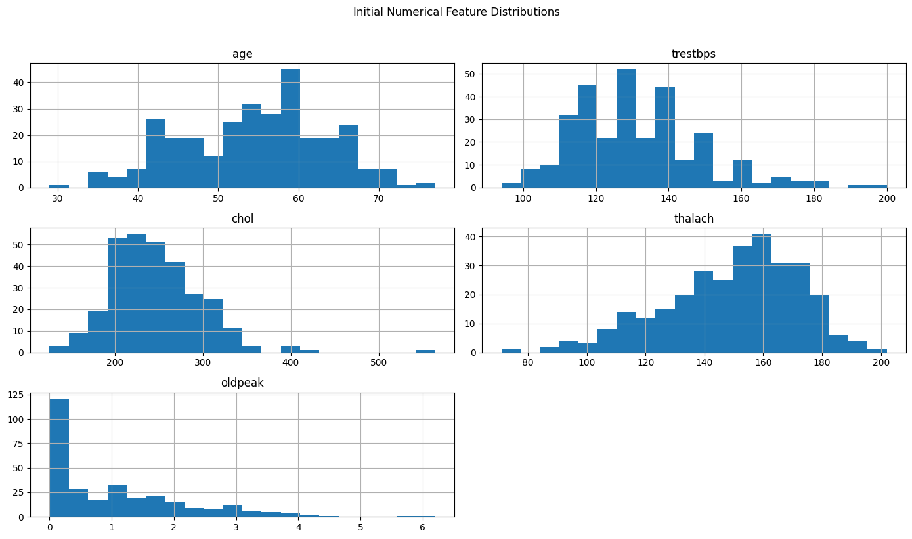
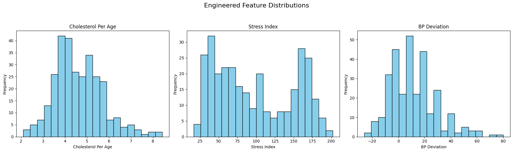
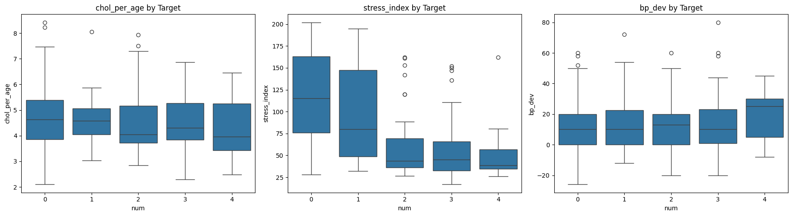

import pandas as pd
import matplotlib.pyplot as plt
import seaborn as sns
from sklearn.preprocessing import StandardScaler
# Load cleaned data
df = pd.read_csv("processed_cleveland_clean.csv")3. Feature Engineering (with Visuals)
This notebook adds and visualizes new features.
##Initial Distributions of Key Features
num_cols = ['age', 'trestbps', 'chol', 'thalach', 'oldpeak']
df[num_cols].hist(bins=20, figsize=(14, 8))
plt.suptitle("Initial Numerical Feature Distributions", y=1.02)
plt.tight_layout()
plt.show()
##Add Engineered Features
df["chol_per_age"] = df["chol"] / df["age"]
df["stress_index"] = df["thalach"] / (df["oldpeak"] + 1)
df["bp_dev"] = df["trestbps"] - 120
df["age_bucket"] = pd.cut(df["age"], bins=[29, 40, 55, 70, 100], labels=[0, 1, 2, 3])
df = pd.get_dummies(df, columns=["age_bucket"], drop_first=True)
df.head()| age | sex | cp | trestbps | chol | fbs | restecg | thalach | exang | oldpeak | slope | ca | thal | num | chol_per_age | stress_index | bp_dev | age_bucket_1 | age_bucket_2 | age_bucket_3 | |
|---|---|---|---|---|---|---|---|---|---|---|---|---|---|---|---|---|---|---|---|---|
| 0 | 63.0 | 1.0 | 1.0 | 145.0 | 233.0 | 1.0 | 2.0 | 150.0 | 0.0 | 2.3 | 3.0 | 0.0 | 6.0 | 0 | 3.698413 | 45.454545 | 25.0 | False | True | False |
| 1 | 67.0 | 1.0 | 4.0 | 160.0 | 286.0 | 0.0 | 2.0 | 108.0 | 1.0 | 1.5 | 2.0 | 3.0 | 3.0 | 2 | 4.268657 | 43.200000 | 40.0 | False | True | False |
| 2 | 67.0 | 1.0 | 4.0 | 120.0 | 229.0 | 0.0 | 2.0 | 129.0 | 1.0 | 2.6 | 2.0 | 2.0 | 7.0 | 1 | 3.417910 | 35.833333 | 0.0 | False | True | False |
| 3 | 37.0 | 1.0 | 3.0 | 130.0 | 250.0 | 0.0 | 0.0 | 187.0 | 0.0 | 3.5 | 3.0 | 0.0 | 3.0 | 0 | 6.756757 | 41.555556 | 10.0 | False | False | False |
| 4 | 41.0 | 0.0 | 2.0 | 130.0 | 204.0 | 0.0 | 2.0 | 172.0 | 0.0 | 1.4 | 1.0 | 0.0 | 3.0 | 0 | 4.975610 | 71.666667 | 10.0 | True | False | False |
##Distributions of Engineered Features
import matplotlib.pyplot as plt
eng_cols = {
"chol_per_age": "Cholesterol Per Age",
"stress_index": "Stress Index",
"bp_dev": "BP Deviation"
}
# Create custom subplots with proper titles
fig, axes = plt.subplots(1, 3, figsize=(18, 5))
for ax, (col, label) in zip(axes, eng_cols.items()):
ax.hist(df[col], bins=20, color="skyblue", edgecolor="black")
ax.set_title(label)
ax.set_xlabel(label)
ax.set_ylabel("Frequency")
plt.suptitle("Engineered Feature Distributions", fontsize=16, y=1.05)
plt.tight_layout()
plt.show()
##Boxplots by Target
fig, axes = plt.subplots(1, 3, figsize=(18, 5))
for i, col in enumerate(eng_cols):
sns.boxplot(data=df, x='num', y=col, ax=axes[i])
axes[i].set_title(f"{col} by Target")
plt.tight_layout()
plt.show()
##Scale Numerical Features
scale_cols = ['age', 'trestbps', 'chol', 'thalach', 'oldpeak',
'chol_per_age', 'stress_index', 'bp_dev']
scaler = StandardScaler()
df[scale_cols] = scaler.fit_transform(df[scale_cols])
df.head()| age | sex | cp | trestbps | chol | fbs | restecg | thalach | exang | oldpeak | slope | ca | thal | num | chol_per_age | stress_index | bp_dev | age_bucket_1 | age_bucket_2 | age_bucket_3 | |
|---|---|---|---|---|---|---|---|---|---|---|---|---|---|---|---|---|---|---|---|---|
| 0 | 0.948726 | 1.0 | 1.0 | 0.757525 | -0.264900 | 1.0 | 2.0 | 0.017197 | 0.0 | 1.087338 | 3.0 | 0.0 | 6.0 | 0 | -0.846084 | -1.016799 | 0.757525 | False | True | False |
| 1 | 1.392002 | 1.0 | 4.0 | 1.611220 | 0.760415 | 0.0 | 2.0 | -1.821905 | 1.0 | 0.397182 | 2.0 | 3.0 | 3.0 | 2 | -0.329103 | -1.059948 | 1.611220 | False | True | False |
| 2 | 1.392002 | 1.0 | 4.0 | -0.665300 | -0.342283 | 0.0 | 2.0 | -0.902354 | 1.0 | 1.346147 | 2.0 | 2.0 | 7.0 | 1 | -1.100386 | -1.200934 | -0.665300 | False | True | False |
| 3 | -1.932564 | 1.0 | 3.0 | -0.096170 | 0.063974 | 0.0 | 0.0 | 1.637359 | 0.0 | 2.122573 | 3.0 | 0.0 | 3.0 | 0 | 1.926599 | -1.091420 | -0.096170 | False | False | False |
| 4 | -1.489288 | 0.0 | 2.0 | -0.096170 | -0.825922 | 0.0 | 2.0 | 0.980537 | 0.0 | 0.310912 | 1.0 | 0.0 | 3.0 | 0 | 0.311818 | -0.515143 | -0.096170 | True | False | False |
##Save Feature-Engineered Dataset
df.to_csv("engineered_heart_data.csv", index=False)
print("✅ Feature engineered data saved as 'engineered_heart_data.csv'")